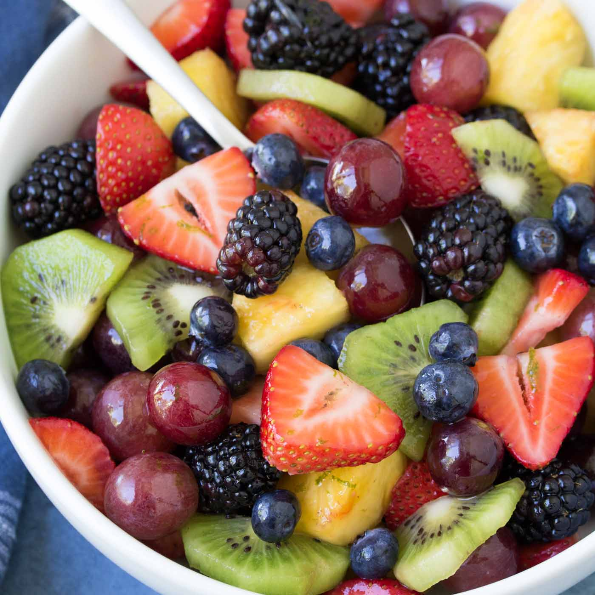

Fruit Salad
Home

Description
This is a simple fruit salad recipe for any occasion. I have chosen some fruits which I think combine flavors and textures well together, but you can use any fruits you like.
The key is using fresh fruits that are just the right ripeness—and the special dressing.
Let's begin!
Ingredients
These ingredients make 4 servings
.
- 2 Bananas
- 1 Cup Blueberries
- 3 Kiwis
- 1 Navel Orange
- 1 Lemon
- 1 Tsp Apple Cider Vinegar
- 2 Pinches Sea Salt
Steps
- Make sure all of your fruits are fresh and ripe! What's ripe for you may be different than what's ripe for me, especially with bananas. I like mine to be yellow, with no brown spots.
- Peel your bananas, orange, and kiwis.
- Cut your bananas into slices, about 1/2 inch thick.
- Cut your kiwis into chunks, about 1 inch x 1 inch.
- Separate the wedges of your orange and slice each wedge into 3 pieces. Remember to remove the seeds!
- Place all of this fruit, along with your cup of blueberries, into a large bowl.
- In a separate container, like a liquid measuring cup: squeeze the juice of your lemon, add the ACV and sea salt. Remove any lemon seeds which may have squeezed in! Now mix these together until the salt is dissolved.
- Pour the dressing all over the bowl of fruit, and use a large spoon to mix it in. Be sure to get the dressing all over the fruit!
- That's it! Enjoy!
- *** BONUS: Serve your fruit salad over a bed of cold Greek yogurt. Yum.